今週の要点
主な発見
- 100万表示超えは35件（質問型474件中）。ただし12件は非推奨・要注意ラベル付き（うち非推奨6件）。1位「何番からブサイクだと思う？」（21,315,929表示）は外見の優劣づけなので真似しない。安全に真似できる100万超えは23件。
- バズの決め手は「引用」。100万+の引用/いいね比の中央値は0.098、それ以外は0.031で約3倍。人によって答えが割れる問い（＝引用で自分の答えを言いたくなる問い）が拡散している。
- 座席系の「今から◯時間」は1M+率26.1%（23件中6件、全体8.8%）。2位「満席の飛行機で今から3時間…どの席なら一番マシ？」は12,209,324表示。同じ型は再投稿しても1,580,423表示（#27）で、シリーズ化が効く。
- 本文は短く、2〜3行で。100万+の文字数の中央値は26.5字（それ以外30字）。81字以上の12件からは100万+がゼロ。
- 朝6〜8時の投稿が強い。この時間帯は79件で100万+が12件（15.2%）。100万+の34件のうち12件がここに集中している。次点は18〜20時（71件中7件）。
- 服装・TPOは安全で伸びるテーマ。表示の中央値は162,581で、「平服でお越しください／ちょうどいいのは何番」は2,162,223表示。ルールに抵触せず、実用性があるので保存（ブクマ）もされる。
- 「あなたは◯歳」の年齢設定は中央値の底上げ型（設定ありの中央値81,460、なしは47,415）。ただし100万+率は設定ありが6.4%、なしが9.1%で、爆発力は「状況の切迫感」や「境界線」の方が上。
バズ投稿TOP35（100万表示超え・全件）
赤枠は非推奨（ルールに抵触）。数字の把握のためだけに掲載しており、真似は推奨しない。リンクはすべて新しいタブでXが開く。
何番からブサイクだと思う？
- 投稿
- 10/22 06:15 JST
- テーマ
- 境界線・何番から
- 問い
- 何番型
- 形式
- 画像1枚・横長（2172×724）・超横長(約3:1)
なぜバズった？
- フック12字・1行だけ。「何番から」で境界線を引かせる
- 問いの型何番型
- 感情トリガー外見ジャッジへの本音と反発（同意・反論の引用が連鎖）
- 答えやすさ番号1つで即答
- 炎上・議論度高：外見の優劣づけで賛否が割れる
- 設定なし（設定ゼロ）
引用/いいね比 0.416（全体中央値 0.035）
満席の飛行機で今から3時間のフライト✈️
空いている席は、この4席だけ。
どの席なら一番マシだと思う？
- 投稿
- 10/20 12:46 JST
- テーマ
- 座席・乗り物
- 問い
- どの/どこ型
- 形式
- 画像1枚・横長（1448×1086）・本文から4択
なぜバズった？
- フック「満席」「この4席だけ」で逃げ道を塞ぐ
- 問いの型どの/どこ型
- 感情トリガー隣席ストレスの想像＋消去法の「一番マシ」
- 答えやすさ4択から1つ
- 炎上・議論度中：「マシ」の基準が人で違い議論に
- 設定3時間・満席の飛行機（状況設定）
引用/いいね比 0.070（全体中央値 0.035）
今から6時間のフライトです
どの席に座りますか？
- 投稿
- 10/19 19:25 JST
- テーマ
- 座席・乗り物
- 問い
- どの/どこ型
- 形式
- 画像1枚・正方形（1500×1500）
なぜバズった？
- フック「今から6時間」で即自分ごと化
- 問いの型どの/どこ型
- 感情トリガー誰の隣に座りたいかという素直な欲
- 答えやすさ席を選ぶだけ
- 炎上・議論度低
- 設定6時間フライト（時間設定）
引用/いいね比 0.342（全体中央値 0.035）
美人とブスの境界線
ぶっちゃけ
何番からブスだと思う❓
- 投稿
- 10/21 12:15 JST
- テーマ
- 境界線・何番から
- 問い
- 何番型
- 形式
- 画像1枚・横長（1672×940）
なぜバズった？
- フック「境界線」＋「ぶっちゃけ」で本音を要求
- 問いの型何番型
- 感情トリガー外見ジャッジへの本音と反発
- 答えやすさ番号1つ
- 炎上・議論度高：外見の優劣づけ
- 設定なし
引用/いいね比 0.259（全体中央値 0.035）
結局、みんなは
どこフェチなの？🤔
※最低、1個は答えて👇
- 投稿
- 10/20 22:43 JST
- テーマ
- 体型・パーツ
- 問い
- どの/どこ型
- 形式
- 画像1枚・横長（1376×768）
なぜバズった？
- フック「結局、みんなは」＋「※最低1個は答えて👇」の回答強制CTA
- 問いの型どの/どこ型
- 感情トリガー性的な好みの告白
- 答えやすさ部位を1つ挙げる
- 炎上・議論度中
- 設定なし
引用/いいね比 0.212（全体中央値 0.035）
今から８時間のフライトです。
どこに座る？
- 投稿
- 10/18 19:30 JST
- テーマ
- 座席・乗り物
- 問い
- どの/どこ型
- 形式
- 画像1枚・正方形（1254×1254）
なぜバズった？
- フック「今から8時間」の長時間フライト
- 問いの型どの/どこ型
- 感情トリガー誰の隣に座りたいか
- 答えやすさ席を選ぶだけ
- 炎上・議論度低
- 設定8時間フライト（時間設定）
引用/いいね比 0.081（全体中央値 0.035）
男性の体毛、何番までならアリ？
- 投稿
- 10/23 13:38 JST
- テーマ
- 境界線・何番から / 体型・パーツ
- 問い
- 何番型
- 形式
- 画像1枚・横長（2172×724）・超横長(約3:1)
なぜバズった？
- フック「何番までならアリ？」の許容ライン型
- 問いの型何番型
- 感情トリガー生理的な好み・男女差
- 答えやすさ番号1つ
- 炎上・議論度中〜高：男女で意見が割れる
- 設定なし
引用/いいね比 0.161（全体中央値 0.035）
どの時代のアイドルが1番かわいい？
昭和→平成→令和
- 投稿
- 10/17 17:30 JST
- テーマ
- 時代比較(昭和平成令和)
- 問い
- どの/どこ型
- 形式
- 画像1枚・正方形（1254×1254）
なぜバズった？
- フック「どの時代」×「昭和→平成→令和」
- 問いの型どの/どこ型
- 感情トリガー懐かしさ・世代自慢
- 答えやすさ3択
- 炎上・議論度中：世代間で推しが割れる
- 設定なし
引用/いいね比 0.059（全体中央値 0.035）
これ、何番からデブ判定になるん？？
教えて～
- 投稿
- 10/22 18:00 JST
- テーマ
- 境界線・何番から / 体型・パーツ
- 問い
- 何番型
- 形式
- 画像1枚・横長（2134×737）・超横長(約3:1)
なぜバズった？
- フック「デブ判定」の境界線
- 問いの型何番型
- 感情トリガー体型ジャッジへの反発
- 答えやすさ番号1つ
- 炎上・議論度高：体型の優劣づけ
- 設定なし
引用/いいね比 0.063（全体中央値 0.035）
どの時代のウエディングドレスが1番好き？
昭和→平成→令和
- 投稿
- 10/18 15:07 JST
- テーマ
- 時代比較(昭和平成令和) / 服装・TPO
- 問い
- どの/どこ型
- 形式
- 画像1枚・正方形（1254×1254）
なぜバズった？
- フック「どの時代のウエディングドレス」
- 問いの型どの/どこ型
- 感情トリガー懐かしさ・憧れ
- 答えやすさ3択
- 炎上・議論度低〜中：世代で好みが割れる
- 設定なし
引用/いいね比 0.118（全体中央値 0.035）
何番からブサイクだと思う？
- 投稿
- 10/23 06:04 JST
- テーマ
- 境界線・何番から
- 問い
- 何番型
- 形式
- 画像1枚・横長（2172×724）・超横長(約3:1)
なぜバズった？
- フック1位と同じ「何番からブサイク」の再投稿
- 問いの型何番型
- 感情トリガー外見ジャッジへの本音と反発
- 答えやすさ番号1つ
- 炎上・議論度高：外見の優劣づけ
- 設定なし
引用/いいね比 0.097（全体中央値 0.035）
25歳の女性だったら、誰と結婚したい？
- 投稿
- 10/18 18:50 JST
- テーマ
- プロポーズ・結婚
- 問い
- 誰型
- 形式
- 画像1枚・横長（1403×1121）
なぜバズった？
- フック「25歳の女性だったら」で視点を反転
- 問いの型誰型
- 感情トリガー理想の結婚相手論（男女で答えが違う）
- 答えやすさ1人選ぶ
- 炎上・議論度中
- 設定年齢ペルソナ（25歳女性）
引用/いいね比 0.082（全体中央値 0.035）
あなたは親です。
娘が連れてきた結婚相手。
4人の中で誰ならいい？
- 投稿
- 10/19 05:59 JST
- テーマ
- プロポーズ・結婚
- 問い
- 誰型
- 形式
- 画像1枚・横長（1448×1086）・本文から4択
なぜバズった？
- フック「あなたは親です」で役割を与える
- 問いの型誰型
- 感情トリガー親目線の評価・偏見の告白
- 答えやすさ4人から1人
- 炎上・議論度中：選ぶ基準で議論
- 設定親＋娘の結婚相手（ロール設定）
引用/いいね比 0.088（全体中央値 0.035）
もう限界⋯1人だけ、誰を助ける？
- 投稿
- 10/20 08:43 JST
- テーマ
- 報酬・サバイバル
- 問い
- 誰型
- 形式
- 画像1枚・正方形（1312×1199）
なぜバズった？
- フック「もう限界⋯」の切迫感
- 問いの型誰型
- 感情トリガー罪悪感を伴う選択
- 答えやすさ1人選ぶ
- 炎上・議論度中
- 設定救助の極限状況
引用/いいね比 0.086（全体中央値 0.035）
高額報酬か、それとも安全策か。
7日だけなら何番を選ぶ？
- 投稿
- 10/23 13:00 JST
- テーマ
- 報酬・サバイバル
- 問い
- 何番型
- 形式
- 画像1枚・横長（1690×931）
なぜバズった？
- フック「高額報酬か、それとも安全策か」の天秤
- 問いの型何番型
- 感情トリガー欲とリスク回避の葛藤
- 答えやすさ番号1つ
- 炎上・議論度中
- 設定7日間の報酬サバイバル
引用/いいね比 0.019（全体中央値 0.035）
あなた中小企業の社長です。
誰か一人、リストラさせないと会社が潰れます。
誰にする？
- 投稿
- 10/20 18:00 JST
- テーマ
- 職場・クビ
- 問い
- 誰型
- 形式
- 画像1枚・横長（1672×941）
なぜバズった？
- フック「あなた中小企業の社長です」
- 問いの型誰型
- 感情トリガー人を切る罪悪感・職場あるある
- 答えやすさ1人選ぶ
- 炎上・議論度中：選ぶ理由で議論
- 設定社長＋会社が潰れる（ロール設定）
引用/いいね比 0.243（全体中央値 0.035）
昭和→平成→令和のファッション
1番カワイイと思うのはどれ？
- 投稿
- 10/17 06:00 JST
- テーマ
- 時代比較(昭和平成令和) / 服装・TPO
- 問い
- どの/どこ型
- 形式
- 画像1枚・正方形（1254×1254）
なぜバズった？
- フック「昭和→平成→令和のファッション」
- 問いの型どの/どこ型
- 感情トリガー懐かしさ・世代自慢
- 答えやすさ3択
- 炎上・議論度低〜中
- 設定なし
引用/いいね比 0.078（全体中央値 0.035）
この電車に乗らないと予定に間に合わない。
しかも、ここから4駅分乗らないといけない。
あなたなら、どのドアを選ぶ？🤔
- 投稿
- 10/18 09:42 JST
- テーマ
- 座席・乗り物
- 問い
- どの/どこ型
- 形式
- 画像1枚・横長（1672×941）
なぜバズった？
- フック「予定に間に合わない」「4駅分」
- 問いの型どの/どこ型
- 感情トリガー通勤のリアルな損得
- 答えやすさドアを選ぶだけ
- 炎上・議論度低〜中
- 設定遅刻できない電車（状況設定）
引用/いいね比 0.091（全体中央値 0.035）
あなたは34歳の独身男性です。
この4人からプロポーズされたら
誰と結婚する？
- 投稿
- 10/17 17:50 JST
- テーマ
- プロポーズ・結婚
- 問い
- 誰型
- 形式
- 画像1枚・正方形（1254×1254）・本文から4択
なぜバズった？
- フック「あなたは34歳の独身男性です」
- 問いの型誰型
- 感情トリガー結婚相手の現実的な選択
- 答えやすさ4人から1人
- 炎上・議論度中
- 設定年齢ペルソナ（34歳独身男性）
引用/いいね比 0.140（全体中央値 0.035）
招待状に「平服でお越しください」と書いてあった
ちょうどいいのは何番
- 投稿
- 10/20 07:00 JST
- テーマ
- 服装・TPO
- 問い
- 何番型
- 形式
- 画像1枚・横長（1402×1122）
なぜバズった？
- フック招待状の「平服でお越しください」
- 問いの型何番型
- 感情トリガーマナーの正解を知りたい不安
- 答えやすさ番号1つ
- 炎上・議論度中：正解が割れる
- 設定結婚式の招待状（実生活の場面）
引用/いいね比 0.215（全体中央値 0.035）
社内BBQ、服装は自由と言われた
BBQにちょうどいい服装は何番
- 投稿
- 10/18 07:00 JST
- テーマ
- 服装・TPO
- 問い
- 何番型
- 形式
- 画像1枚・横長（1402×1122）
なぜバズった？
- フック「服装は自由と言われた」
- 問いの型何番型
- 感情トリガー職場で浮きたくない不安
- 答えやすさ番号1つ
- 炎上・議論度中
- 設定社内BBQ（実生活の場面）
引用/いいね比 0.191（全体中央値 0.035）
実際に男が好きな体型って何番なの？
- 投稿
- 10/22 06:41 JST
- テーマ
- 体型・パーツ
- 問い
- 何番型
- 形式
- 画像1枚・横長（1206×793）
なぜバズった？
- フック「実際に男が好きな体型って」
- 問いの型何番型
- 感情トリガー体型の好みの本音
- 答えやすさ番号1つ
- 炎上・議論度中〜高：体型の比較
- 設定なし
引用/いいね比 0.054（全体中央値 0.035）
親が再婚。
義理の兄と一緒に暮らすことになりました。
誰がいいですか？
- 投稿
- 10/18 06:04 JST
- テーマ
- その他
- 問い
- 誰型
- 形式
- 画像1枚・横長（1448×1086）
なぜバズった？
- フック「親が再婚」「義理の兄」
- 問いの型誰型
- 感情トリガー同居の妄想
- 答えやすさ1人選ぶ
- 炎上・議論度低〜中
- 設定家族の再婚（ロール設定）
引用/いいね比 0.198（全体中央値 0.035）
イケメンとブサメンの境界線。
ぶっちゃけ何番から恋愛対象外？
- 投稿
- 10/21 18:00 JST
- テーマ
- 境界線・何番から / 恋愛・付き合う
- 問い
- 何番型
- 形式
- 画像1枚・横長（1674×940）
なぜバズった？
- フック「イケメンとブサメンの境界線」＋「ぶっちゃけ」
- 問いの型何番型
- 感情トリガー外見ジャッジへの本音と反発
- 答えやすさ番号1つ
- 炎上・議論度高：外見の優劣づけ
- 設定なし
引用/いいね比 0.352（全体中央値 0.035）
全員、体重70キロ。
プロポーズされたら誰と結婚する？
- 投稿
- 10/23 18:00 JST
- テーマ
- プロポーズ・結婚 / 体型・パーツ
- 問い
- 誰型
- 形式
- 画像1枚・横長（1916×821）
なぜバズった？
- フック「全員、体重70キロ」の条件縛り
- 問いの型誰型
- 感情トリガー体型の見え方への驚き・議論
- 答えやすさ1人選ぶ
- 炎上・議論度中〜高：体型の比較
- 設定プロポーズ＋体重条件
引用/いいね比 0.055（全体中央値 0.035）
目の前から、ゾンビになった6人が襲ってきました。
手元の拳銃に残っている弾は1発。
1人だけ倒せば逃げられるとしたら、誰を撃つ？
- 投稿
- 10/22 06:00 JST
- テーマ
- 報酬・サバイバル
- 問い
- 誰型
- 形式
- 画像1枚・横長（1878×1060）・本文から6択
なぜバズった？
- フックゾンビ6人・弾1発の極限状況
- 問いの型誰型
- 感情トリガー罪悪感を伴う選択
- 答えやすさ1人選ぶ
- 炎上・議論度中
- 設定ゾンビ・拳銃（極限状況）
引用/いいね比 0.112（全体中央値 0.035）
満席の飛行機で今から3時間のフライト✈️
空いている席は、この4席だけ。
どの席なら一番マシだと思う？
今回は選びやすい、、かな？
- 投稿
- 10/21 21:58 JST
- テーマ
- 座席・乗り物
- 問い
- どの/どこ型
- 形式
- 画像1枚・横長（1672×941）・本文から4択
なぜバズった？
- フック2位の「満席の飛行機」をシリーズ化
- 問いの型どの/どこ型
- 感情トリガー隣席ストレス＋消去法
- 答えやすさ4択から1つ
- 炎上・議論度中
- 設定3時間・満席の飛行機（状況設定）
引用/いいね比 0.019（全体中央値 0.035）
満席の夜行バスで今から8時間の移動🚌
空いてるのはこの5席だけ。
①〜⑤、どこに座る？
- 投稿
- 10/22 00:12 JST
- テーマ
- 座席・乗り物
- 問い
- 何番型
- 形式
- 画像1枚・縦長（919×1632）・本文から5択
なぜバズった？
- フック「満席の夜行バス」「この5席だけ」「①〜⑤」
- 問いの型何番型
- 感情トリガー隣席ストレス＋消去法
- 答えやすさ5択から1つ
- 炎上・議論度中
- 設定8時間の夜行バス（状況設定）
引用/いいね比 0.061（全体中央値 0.035）
あなたは25歳の独身男性です。
この4人からプロポーズされたら
誰を選ぶ？
- 投稿
- 10/17 06:00 JST
- テーマ
- プロポーズ・結婚
- 問い
- 誰型
- 形式
- 画像1枚・正方形（1254×1254）・本文から4択
なぜバズった？
- フック「あなたは25歳の独身男性です」
- 問いの型誰型
- 感情トリガー結婚相手の選択
- 答えやすさ4人から1人
- 炎上・議論度中
- 設定年齢ペルソナ（25歳独身男性）
引用/いいね比 0.160（全体中央値 0.035）
どの時代の成人式ファッションが好き？
昭和→平成→令和
- 投稿
- 10/20 11:29 JST
- テーマ
- 時代比較(昭和平成令和) / 服装・TPO
- 問い
- どの/どこ型
- 形式
- 画像1枚・正方形（1254×1254）
なぜバズった？
- フック「どの時代の成人式ファッション」
- 問いの型どの/どこ型
- 感情トリガー懐かしさ・世代自慢
- 答えやすさ3択
- 炎上・議論度低〜中
- 設定なし
引用/いいね比 0.166（全体中央値 0.035）
結局みんなは
どの大きさが好きなの❓
- 投稿
- 10/19 13:02 JST
- テーマ
- 体型・パーツ
- 問い
- どの/どこ型
- 形式
- 画像1枚・横長（1152×928）
なぜバズった？
- フック「結局みんなは」＋大きさの好み
- 問いの型どの/どこ型
- 感情トリガー性的な好みの告白
- 答えやすさ1つ選ぶ
- 炎上・議論度中〜高
- 設定なし
引用/いいね比 0.020（全体中央値 0.035）
今から8時間のフライトです。
どの席に座る？
- 投稿
- 10/21 10:05 JST
- テーマ
- 座席・乗り物
- 問い
- どの/どこ型
- 形式
- 画像1枚・正方形（1500×1500）
なぜバズった？
- フック「今から8時間のフライト」
- 問いの型どの/どこ型
- 感情トリガー誰の隣に座りたいか
- 答えやすさ席を選ぶだけ
- 炎上・議論度低
- 設定8時間フライト（時間設定）
引用/いいね比 0.059（全体中央値 0.035）
何番からおばさん？
- 投稿
- 10/22 18:12 JST
- テーマ
- 境界線・何番から
- 問い
- 何番型
- 形式
- 画像1枚・横長（1920×819）
なぜバズった？
- フック「何番からおばさん？」の境界線
- 問いの型何番型
- 感情トリガー年齢・外見ジャッジへの反発
- 答えやすさ番号1つ
- 炎上・議論度高：年齢・外見の優劣づけ
- 設定なし
引用/いいね比 0.098（全体中央値 0.035）
誰か助けてぇ〜っ！！
でも､､誰の手をつかみますか？
- 投稿
- 10/23 06:00 JST
- テーマ
- 報酬・サバイバル
- 問い
- 誰型
- 形式
- 画像1枚・横長（1446×1087）
なぜバズった？
- フック「誰か助けてぇ〜っ！！」の叫び
- 問いの型誰型
- 感情トリガー救助の選択
- 答えやすさ1人選ぶ
- 炎上・議論度低〜中
- 設定救助の状況
引用/いいね比 0.197（全体中央値 0.035）
「うちと結婚して」と言われました。
誰をえらびますか？
- 投稿
- 10/20 06:27 JST
- テーマ
- プロポーズ・結婚
- 問い
- 誰型
- 形式
- 画像1枚・正方形（1254×1254）
なぜバズった？
- フック「うちと結婚して」のセリフ型
- 問いの型誰型
- 感情トリガー告白される妄想
- 答えやすさ1人選ぶ
- 炎上・議論度低
- 設定セリフで場面を作る
引用/いいね比 0.018（全体中央値 0.035）
共通パターン：100万+ と それ以外の比較
比較の母数は、投稿から24時間以上経った質問型386件（100万+は34件、それ以外は352件）。投稿直後の伸びかけの投稿を除外し、条件を揃えた。
| 指標 | 100万+ | それ以外 |
|---|---|---|
| 投稿数 | 34 | 352 |
| 表示 中央値 | 2,265,611 | 42,573 |
| いいね 中央値 | 1,552 | 88 |
| 返信 中央値 | 338 | 34 |
| 引用 中央値 | 176 | 3 |
| ブクマ 中央値 | 514 | 21 |
| リポスト 中央値 | 70 | 10 |
| 引用/いいね比 中央値 | 0.098 | 0.031 |
| 返信/いいね比 中央値 | 0.221 | 0.377 |
| ブクマ/いいね比 中央値 | 0.386 | 0.254 |
| 本文の文字数 中央値（空白除く） | 26.5字 | 30字 |
| 本文の行数 中央値 | 2.5 | 3 |
| 2行以上（状況設定あり） | 27件 | 264件 |
| 「あなたは◯歳」設定あり | 3件 | 44件 |
| 本文から選択肢数が分かる | 7件（中央値4択） | 78件（中央値4択） |
| ルール抵触ワードあり（自動判定） | 7件 | 21件 |
| 投稿者フォロワー 中央値 | 184,618 | 49,001 |
問いの言い回し別
| 言い回し | 投稿数 | 表示 中央値 | 100万+件数 | 100万+率 |
|---|---|---|---|---|
| 「ぶっちゃけ」「結局」 | 9 | 758,542 | 4 | 44.4% |
| 「今から◯時間」 | 23 | 92,487 | 6 | 26.1% |
| 「何番から」「何番まで」「境界線」 | 36 | 55,102 | 7 | 19.4% |
| 「何番」 | 79 | 31,139 | 11 | 13.9% |
| 「一番」「1番」 | 44 | 32,775 | 5 | 11.4% |
| 「どの」「どこ」 | 127 | 54,951 | 12 | 9.4% |
| 「◯人」「◯席」など人数・席数を明記 | 97 | 64,693 | 8 | 8.2% |
| 「誰」 | 130 | 64,518 | 10 | 7.7% |
| 「あなた」で始まる設定 | 120 | 51,392 | 5 | 4.2% |
テーマ別
| 区分 | 投稿数 | 表示 中央値 | 100万+件数 | 100万+率 |
|---|---|---|---|---|
| 職場・クビ | 5 | 671,533 | 1 | 20.0% |
| 報酬・サバイバル | 29 | 163,695 | 4 | 13.8% |
| 服装・TPO | 34 | 162,581 | 5 | 14.7% |
| 体型・パーツ | 27 | 129,393 | 5 | 18.5% |
| 時代比較(昭和平成令和) | 18 | 102,267 | 4 | 22.2% |
| 座席・乗り物 | 39 | 77,222 | 7 | 17.9% |
| 恋愛・付き合う | 46 | 71,948 | 1 | 2.2% |
| プロポーズ・結婚 | 51 | 56,178 | 5 | 9.8% |
| 境界線・何番から | 36 | 55,102 | 7 | 19.4% |
| 隣人・同居・部屋 | 23 | 44,800 | 0 | 0.0% |
| その他 | 124 | 19,895 | 1 | 0.8% |
投稿時間帯（JST）
| 区分 | 投稿数 | 表示 中央値 | 100万+件数 | 100万+率 |
|---|---|---|---|---|
| 0-5時 | 22 | 149,439 | 2 | 9.1% |
| 6-8時 | 79 | 71,323 | 12 | 15.2% |
| 9-11時 | 60 | 22,207 | 3 | 5.0% |
| 12-14時 | 75 | 33,950 | 5 | 6.7% |
| 15-17時 | 42 | 66,491 | 3 | 7.1% |
| 18-20時 | 71 | 72,795 | 7 | 9.9% |
| 21-23時 | 37 | 20,231 | 2 | 5.4% |
問いの型
| 区分 | 投稿数 | 表示 中央値 | 100万+件数 | 100万+率 |
|---|---|---|---|---|
| 誰型 | 126 | 66,964 | 10 | 7.9% |
| どの/どこ型 | 150 | 55,097 | 12 | 8.0% |
| どっち型 | 18 | 34,633 | 0 | 0.0% |
| 何番型 | 92 | 33,026 | 12 | 13.0% |
本文の長さ
| 区分 | 投稿数 | 表示 中央値 | 100万+件数 | 100万+率 |
|---|---|---|---|---|
| 〜15字 | 39 | 49,419 | 4 | 10.3% |
| 16〜30字 | 162 | 51,834 | 18 | 11.1% |
| 31〜50字 | 136 | 65,131 | 9 | 6.6% |
| 51〜80字 | 37 | 44,232 | 3 | 8.1% |
| 81字以上 | 12 | 23,460 | 0 | 0.0% |
「あなたは◯歳」設定
| 区分 | 投稿数 | 表示 中央値 | 100万+件数 | 100万+率 |
|---|---|---|---|---|
| あり | 47 | 81,460 | 3 | 6.4% |
| なし | 339 | 47,415 | 31 | 9.1% |
選択肢数（本文から分かるもののみ）
| 区分 | 投稿数 | 表示 中央値 | 100万+件数 | 100万+率 |
|---|---|---|---|---|
| 2択 | 3 | 38,757 | 0 | 0.0% |
| 3択 | 1 | 238,068 | 0 | 0.0% |
| 4択 | 44 | 77,530 | 5 | 11.4% |
| 5択 | 4 | 116,616 | 1 | 25.0% |
| 6択 | 15 | 72,795 | 1 | 6.7% |
| 7択 | 5 | 43,454 | 0 | 0.0% |
| 8択 | 5 | 19,797 | 0 | 0.0% |
| 9択 | 7 | 79,069 | 0 | 0.0% |
| 10択 | 1 | 35,101 | 0 | 0.0% |
画像内の人数は読み取っていない。本文に「4人」「①〜⑤」などがある投稿だけが対象。13択の実績はデータにない。
画像の比率
| 区分 | 投稿数 | 表示 中央値 | 100万+件数 | 100万+率 |
|---|---|---|---|---|
| 正方形 | 91 | 74,985 | 11 | 12.1% |
| 横長 | 238 | 54,009 | 18 | 7.6% |
| 超横長(約3:1) | 25 | 35,858 | 4 | 16.0% |
| 縦長 | 32 | 22,943 | 1 | 3.1% |
超横長(約3:1)の100万+の4件は#1・#7・#9・#11で、いずれも境界線型（うち3件は非推奨）。3:1の1列は「何番から/まで」系の問いと相性が良い。
読み解き
- 拡散の燃料は「答えが割れること」：100万+はいいね数に対して引用が約3倍多い。返信/いいね比はむしろ低い（0.221 vs 0.377）。返信で語り合うより、引用で自分の答えを表明したくなる問いが伸びている。
- 状況の切迫感を1行で：「満席」「この◯席だけ」「今から◯時間」「もう限界」「予定に間に合わない」のように逃げ道を塞ぐと、消去法で誰でも即答できる。
- 短く、問いで締める：100万+の文字数の中央値は26.5字、行数の中央値は2.5行。設定は1〜2行、最後の1行が問い。
- アカウントの規模も効く：100万+を出した投稿者のフォロワー中央値は184,618、それ以外は49,001。ただしフォロワー12,565の@eiraflame0も安全な投稿で100万+を2本出している。
- ルール抵触ワードは爆発するが真似不可：自動判定でフラグが付いた28件は表示中央値が304,868と高い。ただしブサイク／デブ／おばさん系は非推奨。
バズの型（再利用できるキャプション・テンプレ）
座席・消去法型
満席の{乗り物}で今から{N}時間{絵文字}
空いている席は、この{N}席だけ。
どの席なら一番マシだと思う？根拠：#2（12,209,324）、#27（1,580,423）、#28 夜行バス（1,554,776）。「今から◯時間」は1M+率26.1%
長時間フライト型
今から{N}時間のフライトです。
どの席に座りますか？根拠：#3（10,821,980）、#6（6,446,147）、#32（1,306,099）
TPO・ちょうどいい型
{招待状/会社案内}に「{曖昧な指定}」と書いてあった
ちょうどいいのは何番根拠：#20（2,162,223）、#21（2,032,735）。服装・TPOの中央値は162,581
年齢ペルソナ×プロポーズ型
あなたは{年齢}歳の独身{男性/女性}です。
この{N}人からプロポーズされたら
誰と結婚する？根拠：#12（5,045,256）、#19（2,190,394）、#29（1,553,830）
ロール×ジレンマ型
あなたは{役職}です。
{制約}で、1人だけ{選ぶ/外す}必要があります。
誰にしますか？根拠：#16 社長（2,330,830）、#13 親（2,980,729）。職場・クビの中央値は671,533（n=5）
天秤・報酬型
{メリット}か、それとも{安全策}か。
{期間}だけなら何番を選ぶ？根拠：#15（2,417,464）。報酬・サバイバルの中央値は163,695
時代比較型
どの時代の{アイテム}が1番好き？
昭和→平成→令和根拠：#10（5,140,219）、#17、#30。時代比較の中央値は102,267（実在アイドルは使わない）
本音CTA型
結局、みんなは
{何}が好きなの？
※最低1個は答えて👇根拠：「ぶっちゃけ/結局」は9件中4件が100万+（n小）。性的な部位は避けて{髪型/服}に置き換える
境界線（安全版）
{グラデーション}、何番までならアリ？根拠：「何番から/まで/境界線」は1M+率19.4%。ただし100万+の多くは外見の優劣づけ。比べる対象を「人の見た目の良し悪し」でなく「メイクの濃さ・露出度でない服の気合い」などにする
うみつる（@umitsuru_fire）／やまつる（@yamatsullu）向け 攻めた投稿案
競合で伸びた「何番からブサイク／デブ／おばさん」系は非推奨なので真似しない。
深夜バス13席・一番マシ
満席の深夜バスで今から10時間🚌 空いてるのは、この13席だけ。 ①〜⑬、どの席なら一番マシ？
画像同じ服の成人女性13人を3:1で1列に並べ、各自に表情・しぐさ・持ち物（イヤホン、本、大きい荷物など）で「隣にいたらどうか」の手がかりを付ける。ラベルは黒の①〜⑬
根拠「今から◯時間」は1M+率26.1%、「一番マシ」の中央値は383,474（n=5）
平服の正解は何番
結婚式の招待状に「平服でお越しください」 同じワンピースでも小物でここまで変わる。 ちょうどいいのは何番？
画像同じワンピースで、羽織・バッグ・靴・アクセを①〜⑬で段階的に変える（カジュアル→フォーマル）。背景は無地の撮影スタジオ
根拠#20は2,162,223表示。服装・TPOの中央値は162,581。正解が割れて引用されやすい
メイク、何番まで職場OK？
同じ服、同じ人。メイクだけ変えました。 職場に行けるのは何番まで？
画像同じ服の同じ成人女性モデル1人を、ナチュラル→フルメイクの13段階で並べる。見た目の優劣ではなくTPOを問う境界線
根拠「何番から/まで」は1M+率19.4%。外見の優劣ではないので安全版
29歳・13人からプロポーズ
あなたは29歳の独身男性です。 この13人から同時にプロポーズされたら 誰と結婚する？①〜⑬
画像同じ服の成人女性13人。ラベル①〜⑬の下に職業を英語で（NURSE / CHEF / PILOT / DESIGNER…）入れ、本文は短く保つ
根拠年齢ペルソナ×プロポーズ：#12（5,045,256）、#19（2,190,394）
やまつる版：25歳女性の親友選び
あなたは25歳の女性です。 13人の中で「親友になりたい」のは誰？
画像#12の視点反転を応用。同じ服の成人女性13人で、ラベルの英語の趣味（CAMPING / GAMES / CAFE…）が手がかり。女性フォロワーの回答を誘う
根拠#12「25歳の女性だったら」は5,045,256表示
カフェ店長・1人だけ採用
あなたはカフェの店長です。 予算的に、採用できるのは1人だけ。 13人の応募者から何番を採用する？
画像同じ服（エプロンなし、私服）の成人女性13人。ラベルに英語のスキル（LATTE ART / ENGLISH / 5YRS EXP…）。制服は使わない
根拠職場・クビの中央値は671,533（n=5）。#42「カフェの店長…シフトを外す」は807,347表示。クビより採用の方が角が立たない
無人島7日・1人だけ
無人島で7日間。 連れて行けるのは1人だけ。 ①〜⑬、誰を選ぶ？
画像同じアウトドア服の成人女性13人。英語の特技ラベル（FISHING / FIRST AID / COOK / MAP…）
根拠報酬・サバイバルの中央値は163,695。#14「1人だけ、誰を助ける？」は2,428,571表示
同じ白シャツ×時代
同じ白シャツでも、時代でこう変わる。 1番好きなのは何年？
画像同じ白シャツの成人女性13人で、髪型・メイクを1970→2030に変える。ラベルは黒の年号（1970…2030）。実在人物には似せない
根拠時代比較の中央値は102,267、1M+率22.2%（#10は5,140,219）
結局みんな何番の髪型？
結局、みんなは 何番の髪型が好きなの？ ※最低1個は答えて👇
画像同じ服・同じ成人女性モデルで髪型だけ①〜⑬に変える。朝6〜8時に投稿
根拠#5の回答強制CTAの型（6,593,695）を、性的でない題材に置き換えたもの。「結局」は9件中4件が100万+
10時間フライト・どの席
今から10時間のフライトです✈️ 空いてるのはこの13席。 どの席に座りますか？
画像同じ服の成人女性13人を「座席の隣人」に見立てて1列に並べる。#2の消去法型と交互に出してシリーズ化
根拠#3（10,821,980）、#6（6,446,147）。シリーズの再投稿も100万+
投稿時間の目安：朝6〜8時（100万+率15.2%）、次点は18〜20時（9.9%）。13択は今週のデータに実績がない（本文から分かる最大は10択）。最初の数本は伸び方を検証するつもりで出す。
質問型 TOP100（表示順・列見出しで並べ替え）
| # | 画像 | アカウント | 投稿(JST) | 本文 | 表示 | いいね | 返信 | 引用 | ブクマ | RP | テーマ | 型 | 判定 | リンク |
|---|---|---|---|---|---|---|---|---|---|---|---|---|---|---|
| 1 | なし'"> | こ@kokoro_gallery | 10/22 06:15 | 何番からブサイクだと思う？ | 21,315,929 | 9,345 | 1,237 | 3,883 | 3,400 | 342 | 境界線・何番から | 何番型 | 非推奨(外見の優劣づけ) | 開く ↗ |
| 2 | なし'"> | い@wwwwkkkk_57 | 10/20 12:46 | 満席の飛行機で今から3時間のフライト✈️ 空いている席は、この4席だけ。 どの席なら一番マシだと思う？ | 12,209,324 | 6,041 | 2,278 | 423 | 2,700 | 87 | 座席・乗り物 | どの/どこ型 | 参考OK | 開く ↗ |
| 3 | なし'"> | N@AIcuteneko | 10/19 19:25 | 今から6時間のフライトです どの席に座りますか？ | 10,821,980 | 1,516 | 312 | 518 | 434 | 48 | 座席・乗り物 | どの/どこ型 | 参考OK | 開く ↗ |
| 4 | なし'"> | ク@gekibnews | 10/21 12:15 | 美人とブスの境界線 ぶっちゃけ 何番からブスだと思う❓ | 7,551,011 | 3,919 | 1,277 | 1,014 | 2,747 | 217 | 境界線・何番から | 何番型 | 非推奨(外見の優劣づけ) | 開く ↗ |
| 5 | なし'"> | ク@gekibnews | 10/20 22:43 | 結局、みんなは どこフェチなの？🤔 ※最低、1個は答えて👇 | 6,593,695 | 288 | 125 | 61 | 270 | 15 | 体型・パーツ | どの/どこ型 | 要注意(性的強調) | 開く ↗ |
| 6 | なし'"> | ト@ai_tomatotaro | 10/18 19:30 | 今から８時間のフライトです。 どこに座る？ | 6,446,147 | 5,683 | 599 | 463 | 1,214 | 133 | 座席・乗り物 | どの/どこ型 | 参考OK | 開く ↗ |
| 7 | 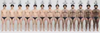 なし'"> | こ@kokoro_gallery | 10/23 13:38 | 男性の体毛、何番までならアリ？ | 5,728,146 | 2,784 | 396 | 448 | 1,483 | 72 | 境界線・何番から / 体型・パーツ | 何番型 | 要注意(外見ジャッジ寄り) | 開く ↗ |
| 8 | 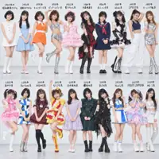 なし'"> | ぷ@i_have_a_pun | 10/17 17:30 | どの時代のアイドルが1番かわいい？ 昭和→平成→令和 | 5,582,455 | 9,320 | 103 | 553 | 3,155 | 719 | 時代比較(昭和平成令和) | どの/どこ型 | 要確認(実在人物か不明) | 開く ↗ |
| 9 | なし'"> | の@Petit_Bijou77 | 10/22 18:00 | これ、何番からデブ判定になるん？？ 教えて～ | 5,465,124 | 5,633 | 1,225 | 355 | 1,457 | 94 | 境界線・何番から / 体型・パーツ | 何番型 | 非推奨(体型の優劣づけ) | 開く ↗ |
| 10 | 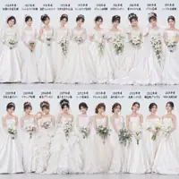 なし'"> | ぷ@i_have_a_pun | 10/18 15:07 | どの時代のウエディングドレスが1番好き？ 昭和→平成→令和 | 5,140,219 | 2,805 | 21 | 330 | 1,429 | 187 | 時代比較(昭和平成令和) / 服装・TPO | どの/どこ型 | 参考OK | 開く ↗ |
| 11 | なし'"> | こ@kokoro_gallery | 10/23 06:04 | 何番からブサイクだと思う？ | 5,081,591 | 1,113 | 536 | 108 | 480 | 32 | 境界線・何番から | 何番型 | 非推奨(外見の優劣づけ) | 開く ↗ |
| 12 | 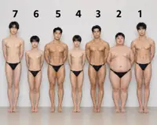 なし'"> | エ@eiraflame0 | 10/18 18:50 | 25歳の女性だったら、誰と結婚したい？ | 5,045,256 | 5,368 | 822 | 441 | 2,623 | 211 | プロポーズ・結婚 | 誰型 | 参考OK | 開く ↗ |
| 13 | なし'"> | ぷ@i_have_a_pun | 10/19 05:59 | あなたは親です。 娘が連れてきた結婚相手。 4人の中で誰ならいい？ | 2,980,729 | 3,089 | 278 | 271 | 526 | 120 | プロポーズ・結婚 | 誰型 | 参考OK | 開く ↗ |
| 14 | なし'"> | M@banana_ai_club2 | 10/20 08:43 | もう限界⋯1人だけ、誰を助ける？ | 2,428,571 | 2,365 | 779 | 204 | 402 | 68 | 報酬・サバイバル | 誰型 | 参考OK | 開く ↗ |
| 15 | なし'"> | エ@eiraflame0 | 10/23 13:00 | 高額報酬か、それとも安全策か。 7日だけなら何番を選ぶ？ | 2,417,464 | 1,052 | 86 | 20 | 321 | 6 | 報酬・サバイバル | 何番型 | 参考OK | 開く ↗ |
| 16 | なし'"> | ト@ai_tomatotaro | 10/20 18:00 | あなた中小企業の社長です。 誰か一人、リストラさせないと会社が潰れます。 誰にする？ | 2,330,830 | 609 | 319 | 148 | 238 | 15 | 職場・クビ | 誰型 | 参考OK | 開く ↗ |
| 17 | 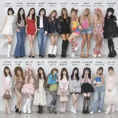 なし'"> | ぷ@i_have_a_pun | 10/17 06:00 | 昭和→平成→令和のファッション 1番カワイイと思うのはどれ？ | 2,269,095 | 1,869 | 73 | 146 | 747 | 208 | 時代比較(昭和平成令和) / 服装・TPO | どの/どこ型 | 参考OK | 開く ↗ |
| 18 | なし'"> | い@wwwwkkkk_57 | 10/18 09:42 | この電車に乗らないと予定に間に合わない。 しかも、ここから4駅分乗らないといけない。 あなたなら、どのドアを選ぶ？🤔 | 2,262,127 | 1,440 | 415 | 131 | 471 | 25 | 座席・乗り物 | どの/どこ型 | 参考OK | 開く ↗ |
| 19 | なし'"> | こ@kokoro_fukufuku | 10/17 17:50 | あなたは34歳の独身男性です。 この4人からプロポーズされたら 誰と結婚する？ | 2,190,394 | 479 | 178 | 67 | 202 | 64 | プロポーズ・結婚 | 誰型 | 参考OK | 開く ↗ |
| 20 | なし'"> | 水@minaduki_esola | 10/20 07:00 | 招待状に「平服でお越しください」と書いてあった ちょうどいいのは何番 | 2,162,223 | 879 | 375 | 189 | 449 | 82 | 服装・TPO | 何番型 | 参考OK | 開く ↗ |
| 21 | なし'"> | 水@minaduki_esola | 10/18 07:00 | 社内BBQ、服装は自由と言われた BBQにちょうどいい服装は何番 | 2,032,735 | 517 | 198 | 99 | 190 | 26 | 服装・TPO | 何番型 | 参考OK | 開く ↗ |
| 22 | 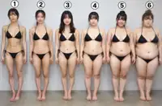 なし'"> | み@ai_mimizuku | 10/22 06:41 | 実際に男が好きな体型って何番なの？ | 1,963,787 | 1,380 | 363 | 74 | 476 | 30 | 体型・パーツ | 何番型 | 要注意(体型の好みの比較) | 開く ↗ |
| 23 | なし'"> | ぷ@i_have_a_pun | 10/18 06:04 | 親が再婚。 義理の兄と一緒に暮らすことになりました。 誰がいいですか？ | 1,902,076 | 4,316 | 215 | 854 | 1,052 | 224 | その他 | 誰型 | 参考OK | 開く ↗ |
| 24 | なし'"> | の@Petit_Bijou77 | 10/21 18:00 | イケメンとブサメンの境界線。 ぶっちゃけ何番から恋愛対象外？ | 1,873,709 | 1,589 | 357 | 560 | 827 | 81 | 境界線・何番から / 恋愛・付き合う | 何番型 | 非推奨(外見の優劣づけ) | 開く ↗ |
| 25 | なし'"> | の@Petit_Bijou77 | 10/23 18:00 | 全員、体重70キロ。 プロポーズされたら誰と結婚する？ | 1,744,953 | 1,748 | 94 | 97 | 501 | 43 | プロポーズ・結婚 / 体型・パーツ | 誰型 | 要注意(体型の比較) | 開く ↗ |
| 26 | なし'"> | の@noanoa2200 | 10/22 06:00 | 目の前から、ゾンビになった6人が襲ってきました。 手元の拳銃に残っている弾は1発。 1人だけ倒せば逃げられるとしたら、誰… | 1,632,807 | 2,391 | 304 | 268 | 509 | 85 | 報酬・サバイバル | 誰型 | 参考OK | 開く ↗ |
| 27 | なし'"> | い@wwwwkkkk_57 | 10/21 21:58 | 満席の飛行機で今から3時間のフライト✈️ 空いている席は、この4席だけ。 どの席なら一番マシだと思う？ 今回は選びやす… | 1,580,423 | 1,932 | 561 | 36 | 1,336 | 46 | 座席・乗り物 | どの/どこ型 | 参考OK | 開く ↗ |
| 28 | なし'"> | カ@galsukid6 | 10/22 00:12 | 満席の夜行バスで今から8時間の移動🚌 空いてるのはこの5席だけ。 ①〜⑤、どこに座る？ | 1,554,776 | 1,432 | 775 | 88 | 609 | 45 | 座席・乗り物 | 何番型 | 参考OK | 開く ↗ |
| 29 | なし'"> | こ@kokoro_fukufuku | 10/17 06:00 | あなたは25歳の独身男性です。 この4人からプロポーズされたら 誰を選ぶ？ | 1,553,830 | 281 | 207 | 45 | 65 | 45 | プロポーズ・結婚 | 誰型 | 参考OK | 開く ↗ |
| 30 | なし'"> | ぷ@i_have_a_pun | 10/20 11:29 | どの時代の成人式ファッションが好き？ 昭和→平成→令和 | 1,466,199 | 995 | 17 | 165 | 326 | 104 | 時代比較(昭和平成令和) / 服装・TPO | どの/どこ型 | 参考OK | 開く ↗ |
| 31 | なし'"> | ク@gekibnews | 10/19 13:02 | 結局みんなは どの大きさが好きなの❓ | 1,355,954 | 4,630 | 531 | 94 | 1,762 | 232 | 体型・パーツ | どの/どこ型 | 要注意(性的強調) | 開く ↗ |
| 32 | なし'"> | N@AIcuteneko | 10/21 10:05 | 今から8時間のフライトです。 どの席に座る？ | 1,306,099 | 374 | 131 | 22 | 155 | 8 | 座席・乗り物 | どの/どこ型 | 参考OK | 開く ↗ |
| 33 | なし'"> | ジ@jiro_fire | 10/22 18:12 | 何番からおばさん？ | 1,180,074 | 530 | 451 | 52 | 274 | 54 | 境界線・何番から | 何番型 | 非推奨(外見の優劣づけ) | 開く ↗ |
| 34 | なし'"> | か@kaijun99 | 10/23 06:00 | 誰か助けてぇ〜っ！！ でも､､誰の手をつかみますか？ | 1,053,198 | 949 | 173 | 187 | 282 | 55 | 報酬・サバイバル | 誰型 | 参考OK | 開く ↗ |
| 35 | なし'"> | ぷ@i_have_a_pun | 10/20 06:27 | 「うちと結婚して」と言われました。 誰をえらびますか？ | 1,032,542 | 1,150 | 135 | 21 | 520 | 60 | プロポーズ・結婚 | 誰型 | 参考OK | 開く ↗ |
| 36 | なし'"> | ジ@jiro_fire | 10/19 11:47 | 今から8時間のバス旅。 あなたならどこの席を選ぶ？ | 970,571 | 365 | 126 | 25 | 97 | 23 | 座席・乗り物 | どの/どこ型 | 参考OK | 開く ↗ |
| 37 | 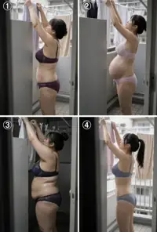 なし'"> | N@AIcuteneko | 10/18 02:03 | どの女性の隣に住みたい？ | 937,698 | 1,696 | 761 | 40 | 433 | 40 | 隣人・同居・部屋 | どの/どこ型 | 参考OK | 開く ↗ |
| 38 | なし'"> | 大@ymk_kbys | 10/18 07:46 | どっちと付き合いたい？？ ←薄顔巨乳 美人貧乳→ | 935,423 | 1,204 | 273 | 48 | 307 | 20 | 体型・パーツ / 恋愛・付き合う | どっち型 | 要注意(性的強調) | 開く ↗ |
| 39 | 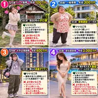 なし'"> | こ@kokoro_fukufuku | 10/23 18:00 | あなたは33歳男性です。 結婚後は彼女の家で暮らします。 誰と結婚しますか？ | 928,910 | 461 | 178 | 57 | 140 | 62 | プロポーズ・結婚 / 恋愛・付き合う | 誰型 | 参考OK | 開く ↗ |
| 40 | なし'"> | 半@Hanzawatsuyoshi | 10/22 11:55 | Z世代の面接に「私服できてください」と会社案内に書いてあったら、 何番なら大丈夫そう？ | 827,603 | 698 | 203 | 76 | 277 | 38 | 服装・TPO | 何番型 | 参考OK | 開く ↗ |
| 41 | なし'"> | M@banana_ai_club2 | 10/19 16:30 | 何番の太ももが好き？ | 821,230 | 1,452 | 402 | 123 | 562 | 42 | 体型・パーツ | 何番型 | 要注意(性的強調) | 開く ↗ |
| 42 | なし'"> | 水@minaduki_esola | 10/21 21:00 | あなたはカフェの店長です 人件費が足りず、来月は1人だけシフトを外さないといけません 誰を外しますか？ | 807,347 | 394 | 168 | 86 | 161 | 16 | 職場・クビ | 誰型 | 参考OK | 開く ↗ |
| 43 | なし'"> | ダ@madashachiku | 10/18 15:48 | なお、日本を震撼させたシリアルキラー(連続殺人鬼)はこちら 誰が一番ヤバいと思う❓ | 799,442 | 629 | 30 | 10 | 306 | 64 | その他 | 誰型 | 非推奨(実在人物) | 開く ↗ |
| 44 | なし'"> | ク@gekibnews | 10/19 23:01 | 結局、みんなは どのサイズが好きなの❓ | 758,542 | 3,126 | 246 | 34 | 1,983 | 109 | 体型・パーツ | どの/どこ型 | 参考OK | 開く ↗ |
| 45 | なし'"> | ダ@madashachiku | 10/17 12:11 | 12時間にも及ぶフライト✈️ この6つの空席から 1つだけ選んで座らなければなりません。 どの席を選ぶ❓💀 | 740,184 | 582 | 154 | 164 | 135 | 63 | 座席・乗り物 | どの/どこ型 | 参考OK | 開く ↗ |
| 46 | なし'"> | な@ny_ai2 | 10/23 05:55 | あなたは41歳、まだ実家暮らし。 4人からプロポーズされました。 誰と結婚したいですか？ | 714,474 | 534 | 141 | 15 | 247 | 36 | プロポーズ・結婚 | 誰型 | 参考OK | 開く ↗ |
| 47 | 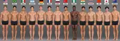 なし'"> | エ@eiraflame0 | 10/19 07:00 | どの国の男性と結婚したい？ | 697,307 | 478 | 83 | 12 | 339 | 41 | プロポーズ・結婚 | どの/どこ型 | 参考OK | 開く ↗ |
| 48 | なし'"> | な@ny_ai2 | 10/17 05:55 | あなたは45歳、仕事はクビが決まった。 4人からプロポーズされました。 誰と結婚したいですか？ | 671,533 | 251 | 74 | 10 | 84 | 19 | プロポーズ・結婚 / 職場・クビ | 誰型 | 参考OK | 開く ↗ |
| 49 | 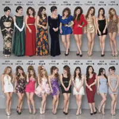 なし'"> | ぷ@i_have_a_pun | 10/19 17:30 | どの時代のキャバ嬢が好き？ 昭和→平成→令和 | 671,240 | 177 | 11 | 14 | 68 | 28 | 時代比較(昭和平成令和) | どの/どこ型 | 参考OK | 開く ↗ |
| 50 | なし'"> | ぷ@i_have_a_pun | 10/17 12:16 | 3日間住むとお金がもらえます。 どの部屋にしますか？ | 669,745 | 202 | 37 | 7 | 65 | 24 | 隣人・同居・部屋 | どの/どこ型 | 参考OK | 開く ↗ |
| 51 | 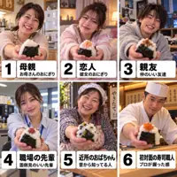 なし'"> | ミ@mio_honnetalk | 10/21 18:44 | 素手で握ったおにぎり、 何番までなら食べられる？🍙 | 651,259 | 1,196 | 900 | 447 | 172 | 71 | 境界線・何番から | 何番型 | 参考OK | 開く ↗ |
| 52 | なし'"> | ダ@madashachiku | 10/19 20:52 | ゾンビだらけの世界で生き残れ──🧟♂️💀 街は感染者であふれ、 食料も安全な場所も限られている……。 この6人のう… | 647,645 | 2,229 | 131 | 405 | 450 | 190 | 座席・乗り物 / 報酬・サバイバル | 誰型 | 参考OK | 開く ↗ |
| 53 | なし'"> | 水@minaduki_esola | 10/21 07:00 | 彼の実家に初めて挨拶に行く日、「ラフな格好で来てね」と言われた ちょうどいいのは何番 | 620,852 | 360 | 103 | 51 | 124 | 17 | 服装・TPO | 何番型 | 参考OK | 開く ↗ |
| 54 | なし'"> | ぷ@i_have_a_pun | 10/20 17:32 | 「わしと結婚してくれん？」と言われました。 誰をえらびますか？ | 616,936 | 589 | 31 | 34 | 150 | 33 | プロポーズ・結婚 | 誰型 | 参考OK | 開く ↗ |
| 55 | なし'"> | い@wwwwkkkk_57 | 10/19 12:00 | 大雨で帰れなくなった夜☔️ 泊まれる部屋はこの4つだけ（全て相部屋） 一晩一緒に過ごすなら、どれを選ぶ？ | 616,393 | 991 | 373 | 36 | 454 | 30 | 隣人・同居・部屋 | どの/どこ型 | 参考OK | 開く ↗ |
| 56 | なし'"> | エ@eiraflame0 | 10/21 18:20 | アニメキャラが実写化したらヤバすぎた…！？ みんなは誰が一番好き？ | 611,028 | 884 | 47 | 6 | 464 | 42 | その他 | 誰型 | 参考OK | 開く ↗ |
| 57 | なし'"> | ダ@madashachiku | 10/18 20:55 | 古代の秘宝を探す依頼を受けた──💎🏺 行く手には、危険な遺跡や巧妙な罠、 そして数々の謎が待ち受けています。 この6… | 601,254 | 237 | 18 | 31 | 65 | 36 | 座席・乗り物 / 報酬・サバイバル | 誰型 | 参考OK | 開く ↗ |
| 58 | 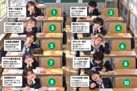 なし'"> | ジ@jiro_fire | 10/19 18:10 | 高校1年間、席替えなし。 あなたならどの席に座る？ | 575,304 | 809 | 101 | 67 | 247 | 53 | 座席・乗り物 | どの/どこ型 | 非推奨(学校・未成年連想) | 開く ↗ |
| 59 | なし'"> | え@edamaru666 | 10/19 12:04 | 必ずどこかに住んで下さい。 どこを選びますか？ | 561,778 | 540 | 54 | 13 | 166 | 18 | 隣人・同居・部屋 | どの/どこ型 | 参考OK | 開く ↗ |
| 60 | なし'"> | 西@mm551234 | 10/23 23:09 | あなたは24歳の男性です。 住んでいた家を追い出され、この中の誰かとルームシェアをしなければなりません。 誰を選ぶ？ | 541,978 | 892 | 106 | 19 | 582 | 16 | 隣人・同居・部屋 | 誰型 | 参考OK | 開く ↗ |
| 61 | なし'"> | こ@kokoro_gallery | 10/21 07:08 | 初デートの服装、何番が理想？ | 541,890 | 911 | 171 | 94 | 475 | 47 | 服装・TPO / 恋愛・付き合う | 何番型 | 参考OK | 開く ↗ |
| 62 | なし'"> | ダ@madashachiku | 10/18 23:29 | 世界を震撼させた大量虐殺の指導者10選。 歴史に刻まれた独裁者たち── その名の裏に、数え切れない犠牲があった。 … | 519,404 | 963 | 30 | 15 | 384 | 135 | その他 | 誰型 | 参考OK | 開く ↗ |
| 63 | なし'"> | る@ruru_ai_girls | 10/18 20:18 | 顔だけで選んでください🥳 一番タイプなのは何番❓️ | 512,282 | 469 | 302 | 37 | 319 | 27 | 恋愛・付き合う | 何番型 | 参考OK | 開く ↗ |
| 64 | なし'"> | こ@kokoro_gallery | 10/21 20:21 | 男性目線で、 何番からメイクが濃すぎると思う？ | 478,620 | 699 | 79 | 81 | 244 | 17 | 境界線・何番から | 何番型 | 参考OK | 開く ↗ |
| 65 | なし'"> | ぷ@i_have_a_pun | 10/24 12:02 | ぶっちゃけ、 どの夫婦になりたい？ | 475,642 | 328 | 20 | 9 | 114 | 34 | その他 | どの/どこ型 | 参考OK | 開く ↗ |
| 66 | なし'"> | ぷ@i_have_a_pun | 10/23 06:00 | 彼氏と初ドライブです。 どの車で来て欲しい？ | 472,113 | 591 | 103 | 107 | 111 | 84 | その他 | どの/どこ型 | 参考OK | 開く ↗ |
| 67 | なし'"> | V@vixoraX0 | 10/18 12:52 | 無人島で1ヶ月間過ごすなら？ 途中交代なし、連れて行けるのは1人だけ。 あなたなら誰を選ぶ？ | 455,935 | 309 | 143 | 7 | 141 | 10 | 報酬・サバイバル | 誰型 | 参考OK | 開く ↗ |
| 68 | なし'"> | ジ@jiro_fire | 10/17 17:50 | 居酒屋、あなたならどこに座る？ | 439,240 | 28 | 1 | 1 | 6 | 18 | 座席・乗り物 | どの/どこ型 | 参考OK | 開く ↗ |
| 69 | 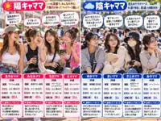 なし'"> | ね@aki_shoken | 10/17 06:15 | ママも「陽キャ」と「陰キャ」でこうも違う 誰にも言えない秘密が・・・ | 438,713 | 182 | 12 | 3 | 85 | 36 | その他 | 誰型 | 参考OK | 開く ↗ |
| 70 | なし'"> | 西@mm551234 | 10/17 10:44 | あなたは28歳男性です。 マッチングアプリで9人の女性とマッチングしました。 この中で1人真剣に付き合うなら誰？ | 430,716 | 916 | 97 | 10 | 632 | 23 | 恋愛・付き合う | 誰型 | 参考OK | 開く ↗ |
| 71 | なし'"> | 西@mm551234 | 10/18 14:59 | あなたは30歳男性です。 婚活アプリで9人の女性とマッチングしました。 この中で結婚するなら誰？ | 420,802 | 709 | 98 | 12 | 478 | 29 | プロポーズ・結婚 | 誰型 | 参考OK | 開く ↗ |
| 72 | 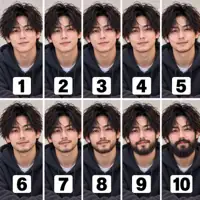 なし'"> | ミ@mio_honnetalk | 10/22 20:43 | 男性のヒゲ、 何番から「清潔感がない」と感じる？ | 413,763 | 258 | 154 | 82 | 100 | 17 | 境界線・何番から / 体型・パーツ | 何番型 | 参考OK | 開く ↗ |
| 73 | なし'"> | M@banana_ai_club2 | 10/19 15:30 | 女性のお腹どっちが好き？ ⇐マッチョ ぽちゃ⇒ | 402,070 | 382 | 60 | 11 | 113 | 13 | 体型・パーツ | どっち型 | 参考OK | 開く ↗ |
| 74 | なし'"> | N@AIcuteneko | 10/18 20:28 | あなたは24歳の男性です この中の誰かとパートナーになれば報酬がもらえます 誰にプロポーズしますか？ | 398,054 | 307 | 111 | 8 | 123 | 10 | プロポーズ・結婚 / 報酬・サバイバル / 恋愛・付き合う | 誰型 | 参考OK | 開く ↗ |
| 75 | なし'"> | V@vixoraX0 | 10/21 18:12 | あなたは31歳の男性。 この中の1人と無人島で1ヶ月間、2人きりで過ごすと報酬がもらえる。 誰と一緒に過ごしたい？ | 396,199 | 416 | 177 | 12 | 179 | 14 | 報酬・サバイバル | 誰型 | 参考OK | 開く ↗ |
| 76 | なし'"> | M@banana_ai_club2 | 10/22 08:00 | 【ハゲ】て何番から？ | 395,752 | 235 | 457 | 137 | 88 | 28 | 境界線・何番から | 何番型 | 非推奨(外見・体型の優劣) | 開く ↗ |
| 77 | なし'"> | 水@minaduki_esola | 10/19 07:00 | 取引先との打ち合わせ、服装は「ビジネスカジュアルで」と言われた ちょうどいいのは何番 | 393,919 | 154 | 47 | 38 | 86 | 5 | 服装・TPO | 何番型 | 参考OK | 開く ↗ |
| 78 | なし'"> | 西@mm551234 | 10/20 21:22 | 今から6時間のフライトです✈️ どの席に座る？ | 385,421 | 574 | 311 | 50 | 231 | 27 | 座席・乗り物 | どの/どこ型 | 参考OK | 開く ↗ |
| 79 | なし'"> | こ@mastersugee | 10/18 17:54 | 自分の娘がなるならどっちがマシ？？ ←引きこもりデブス 誰でもかれでもヤリマンギャル→ | 383,474 | 417 | 44 | 32 | 93 | 17 | 体型・パーツ | どっち型 | 非推奨(外見・体型の優劣) | 開く ↗ |
| 80 | なし'"> | え@edamaru666 | 10/23 11:55 | あなたは子供をあずけるなら どの保育士さんを選びますか？ | 377,889 | 400 | 63 | 52 | 126 | 41 | その他 | どの/どこ型 | 参考OK | 開く ↗ |
| 81 | なし'"> | ダ@madashachiku | 10/18 12:07 | あなたの娘がテロリストに誘拐された──。 救出に向かうあなたに、 隣の席に座ったヒーローが加勢してくれます✈️ 選べ… | 371,577 | 1,664 | 210 | 285 | 321 | 262 | 座席・乗り物 | 誰型 | 参考OK | 開く ↗ |
| 82 | なし'"> | ミ@mio_honnetalk | 10/21 20:33 | 結局のところ、 どの格好している女の子が ムラっとくる？ | 368,233 | 507 | 44 | 17 | 283 | 25 | 服装・TPO | どの/どこ型 | 要注意(性的強調) | 開く ↗ |
| 83 | なし'"> | ジ@jiro_fire | 10/20 18:00 | あなたの奥さん、正直どっち？ | 358,965 | 306 | 10 | 11 | 120 | 71 | その他 | どっち型 | 参考OK | 開く ↗ |
| 84 | なし'"> | ね@aki_shoken | 10/24 07:15 | 巨乳の境界線 どこからが巨乳 あなたの理想は？ | 356,664 | 790 | 80 | 13 | 593 | 42 | 境界線・何番から / 体型・パーツ | どの/どこ型 | 要注意(性的強調) | 開く ↗ |
| 85 | なし'"> | え@edamaru666 | 10/18 05:58 | あなたは24歳。 誰と同居しますか？ 必ず4人の中から選んで下さい。 | 354,641 | 275 | 31 | 5 | 81 | 20 | 隣人・同居・部屋 | 誰型 | 参考OK | 開く ↗ |
| 86 | なし'"> | 水@minaduki_esola | 10/22 21:00 | 会社のハロウィン飲み会、「仮装は控えめで」と言われた ちょうどいいのは何番？ | 347,602 | 225 | 49 | 12 | 74 | 5 | 服装・TPO | 何番型 | 参考OK | 開く ↗ |
| 87 | なし'"> | 半@Hanzawatsuyoshi | 10/24 05:55 | Z世代の面接に「私服でお越しください」と書いてあったら、 ちょうどいいのは何番？ | 341,260 | 337 | 222 | 73 | 71 | 48 | 服装・TPO | 何番型 | 参考OK | 開く ↗ |
| 88 | なし'"> | え@edamaru666 | 10/18 05:58 | あなたは女性です。 男性とキスをすれば報酬がもらえます。 どの男性を選びますか？ | 336,517 | 240 | 25 | 22 | 91 | 22 | 報酬・サバイバル | どの/どこ型 | 参考OK | 開く ↗ |
| 89 | なし'"> | カ@galsukid6 | 10/21 15:00 | 7日間耐えたら1000万円。 ①〜④どれ選ぶ？ 選んだ理由も聞かせて😂 | 331,233 | 356 | 187 | 44 | 75 | 11 | 報酬・サバイバル | 何番型 | 参考OK | 開く ↗ |
| 90 | なし'"> | ぷ@i_have_a_pun | 10/17 17:58 | 3日間住むと、30万円もらえます。 外出できません。 どの部屋にしますか？ | 308,333 | 248 | 114 | 14 | 76 | 38 | 報酬・サバイバル / 隣人・同居・部屋 | どの/どこ型 | 参考OK | 開く ↗ |
| 91 | なし'"> | N@AIcuteneko | 10/17 07:02 | あなたは25歳です。 この中の1人と1年間だけ同棲をすれば報酬が貰えます。 誰にする？ | 304,582 | 291 | 101 | 8 | 79 | 8 | 報酬・サバイバル | 誰型 | 参考OK | 開く ↗ |
| 92 | なし'"> | る@ruru_ai_girls | 10/22 07:28 | 体型別のリアルな悩み、全部あるあるすぎる🥰 あなたはどの体型が好き❓️ | 278,807 | 719 | 123 | 14 | 419 | 18 | 体型・パーツ | どの/どこ型 | 参考OK | 開く ↗ |
| 93 | なし'"> | V@vixoraX0 | 10/24 13:20 | 8日間、この5人の中なら誰を選ぶ？ | 276,158 | 175 | 46 | 6 | 100 | 6 | その他 | 誰型 | 参考OK | 開く ↗ |
| 94 | なし'"> | ダ@madashachiku | 10/21 21:43 | 世界のハイジャック事件10選──✈️ 乗っ取り、人質救出、衝撃の結末……。 なぜハイジャックは減ったのか🚨 最も衝… | 275,548 | 82 | 1 | 2 | 25 | 14 | その他 | どの/どこ型 | 参考OK | 開く ↗ |
| 95 | なし'"> | ダ@madashachiku | 10/22 11:39 | 世界のマフィア・ギャング10選──🔫🌍 世界各地に広がる巨大犯罪組織……。 最もヤバい組織はどれ❓ | 271,915 | 531 | 9 | 5 | 172 | 50 | その他 | どの/どこ型 | 参考OK | 開く ↗ |
| 96 | なし'"> | カ@galsukid6 | 10/23 15:19 | この2軒のラーメン屋、通うならどっち？🍜 ① 1,300円 ② 650円 理由も教えて😂 | 258,923 | 950 | 1,077 | 189 | 76 | 56 | その他 | 何番型 | 参考OK | 開く ↗ |
| 97 | なし'"> | な@ny_ai2 | 10/18 05:55 | あなたは38歳、転職する予定。 4人からプロポーズされました。 誰と結婚したいですか？ | 253,742 | 187 | 94 | 1 | 54 | 30 | プロポーズ・結婚 | 誰型 | 参考OK | 開く ↗ |
| 98 | なし'"> | 西@mm551234 | 10/19 14:56 | あなたは20歳男性で無職です。 あるパーティーに参加して8人の女性と出会いました。 この中でヒモになるなら誰を選ぶ？ | 249,666 | 670 | 86 | 10 | 368 | 25 | その他 | 誰型 | 参考OK | 開く ↗ |
| 99 | なし'"> | い@iroha_ni_AI | 10/17 19:30 | あなたは生徒の父親。 保護者参観のとき、先生に履いてほしいスカートはどれ？ | 241,503 | 2,357 | 172 | 18 | 1,149 | 91 | 服装・TPO | どの/どこ型 | 非推奨(学校・未成年連想) | 開く ↗ |
| 100 | なし'"> | V@vixoraX0 | 10/19 19:01 | この3組のカップル、将来いちばん子どもが多くなりそうなのは誰？ | 238,068 | 308 | 58 | 4 | 77 | 12 | その他 | 誰型 | 参考OK | 開く ↗ |
参考：アカウントランキング（30アカウント）
| # | アカウント | 名前 | フォロワー | 7日投稿 | 表示中央値 | 最高表示 | 100万+ | 10万+ | 代表投稿 |
|---|---|---|---|---|---|---|---|---|---|
| 1 | ぷ@i_have_a_pun | ぷん | 351,658 | 50 | 134,605 | 5,582,455 | 8 | 31 | 最高の投稿 ↗ |
| 2 | N@AIcuteneko | NekoTamago. | 308,322 | 24 | 91,168 | 10,821,980 | 2 | 10 | 最高の投稿 ↗ |
| 3 | 水@minaduki_esola | 水無月絵空 | 258,211 | 24 | 66,766 | 2,162,223 | 2 | 10 | 最高の投稿 ↗ |
| 4 | の@Petit_Bijou77 | のあ | 8,162 | 7 | 92,487 | 5,465,124 | 3 | 3 | 最高の投稿 ↗ |
| 5 | ダ@madashachiku | ダビ | 128,521 | 40 | 53,742 | 964,645 | 0 | 17 | 最高の投稿 ↗ |
| 6 | 西@mm551234 | 西野みひろ | 39,288 | 17 | 73,766 | 541,978 | 0 | 6 | 最高の投稿 ↗ |
| 7 | 大@ymk_kbys | 大喜利馬 | 49,601 | 3 | 59,255 | 935,423 | 0 | 1 | 最高の投稿 ↗ |
| 8 | か@kaijun99 | かいせ@ホンネの美容 | 72,831 | 14 | 32,216 | 1,053,198 | 1 | 4 | 最高の投稿 ↗ |
| 9 | な@ny_ai2 | なるよし｜知らないと損するお金の話💰 | 97,980 | 29 | 29,308 | 1,319,784 | 2 | 10 | 最高の投稿 ↗ |
| 10 | い@iroha_ni_AI | いろは | AI美女家庭教師 | 51,927 | 30 | 43,709 | 437,667 | 0 | 7 | 最高の投稿 ↗ |
| 11 | ジ@jiro_fire | ジロー@脱サラした人 | 21,925 | 19 | 28,641 | 1,180,074 | 1 | 5 | 最高の投稿 ↗ |
| 12 | こ@kokoro_gallery | こころ | 327,890 | 24 | 35,386 | 21,315,929 | 3 | 6 | 最高の投稿 ↗ |
| 13 | こ@mastersugee | こりゃスゲぇ！ | 114,531 | 5 | 31,374 | 383,474 | 0 | 2 | 最高の投稿 ↗ |
| 14 | の@noanoa2200 | のあ | 111,026 | 8 | 24,659 | 1,632,807 | 1 | 3 | 最高の投稿 ↗ |
| 15 | こ@kokoro_fukufuku | こころ福福 | 33,894 | 54 | 28,512 | 2,190,394 | 3 | 10 | 最高の投稿 ↗ |
| 16 | V@vixoraX0 | ViX0RA | 24,643 | 19 | 36,299 | 455,935 | 0 | 6 | 最高の投稿 ↗ |
| 17 | え@edamaru666 | えだまる | 37,140 | 57 | 24,366 | 661,540 | 0 | 13 | 最高の投稿 ↗ |
| 18 | 半@Hanzawatsuyoshi | 半沢ツヨシX劇場｜営業クエスト｢即決に導く」黄金の方程式 著者 | 93,737 | 34 | 26,100 | 827,603 | 0 | 8 | 最高の投稿 ↗ |
| 19 | ク@gekibnews | クロニクル・ラボ | 272,192 | 41 | 17,614 | 7,551,011 | 3 | 10 | 最高の投稿 ↗ |
| 20 | カ@galsukid6 | カピバラ（ギャル好き） | 77,645 | 32 | 16,841 | 1,554,776 | 1 | 5 | 最高の投稿 ↗ |
| 21 | 俺@vc_koyori | 俺の娘たち | 中の人の妄想 | 58,606 | 13 | 17,049 | 132,157 | 0 | 1 | 最高の投稿 ↗ |
| 22 | エ@eiraflame0 | エイラ | 12,565 | 28 | 6,463 | 5,045,256 | 2 | 6 | 最高の投稿 ↗ |
| 23 | 切@kirifuda_ai | 切り札 | 8,697 | 15 | 13,516 | 44,800 | 0 | 0 | 最高の投稿 ↗ |
| 24 | ね@aki_shoken | ねこたび＠旅行とお買い物スキのkindle作家 | 40,524 | 28 | 12,768 | 438,713 | 0 | 3 | 最高の投稿 ↗ |
| 25 | る@ruru_ai_girls | るる | AI Girls | 49,001 | 42 | 11,885 | 512,282 | 0 | 8 | 最高の投稿 ↗ |
| 26 | ト@ai_tomatotaro | トマトたろう | 37,781 | 16 | 7,654 | 6,446,147 | 2 | 4 | 最高の投稿 ↗ |
| 27 | い@wwwwkkkk_57 | いけ｜1枚目のあとに | 91,396 | 25 | 6,248 | 12,209,324 | 3 | 5 | 最高の投稿 ↗ |
| 28 | ミ@mio_honnetalk | ミオ｜本音で選んで。 | 2,242 | 40 | 7,438 | 651,259 | 0 | 5 | 最高の投稿 ↗ |
| 29 | み@ai_mimizuku | みみずく | 11,567 | 25 | 4,452 | 1,963,787 | 1 | 4 | 最高の投稿 ↗ |
| 30 | M@banana_ai_club2 | MISA | 16,753 | 57 | 2,586 | 8,149,972 | 2 | 5 | 最高の投稿 ↗ |
方法・注意
- 期間：2026/10/17〜10/24（JST）。対象：AI美女ラインナップ系の上位30アカウントの投稿820件。このうち「何番／誰／どの・どこ／どっち」の問いを含む画像投稿474件を「質問型」とした。
- 数値はすべてX APIの公開メトリクス（表示＝impression）。共通パターンの比較は、取得時点で24時間以上経った386件に限定した。
- テーマ・問いの型・設定の有無・選択肢数・ルール判定は本文からの自動分類と目視補正によるもので、画像の中身は解析していない。「なぜバズった？」は数値と本文に基づく分析者の解釈。
- 非推奨／要注意ラベルは、うみつる・やまつるのコンテンツルール（成人女性のみ・制服や未成年連想なし・実在人物なし・ロゴなし・体型を貶さない）に照らした判定。